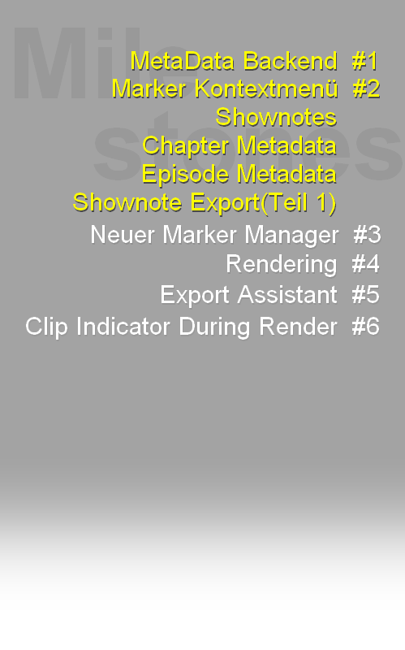

Podcast Metadata For Ultraschall
1. Introduction
2. Für Testende
3. Für Entwickelnde
4. Changelog
Changelog
2002-08-27
- erste Version von Phase 1 mit Shownotes, Attributen für Shownotes, Kapiteln und Episoden, Marker-Kontextmenü und rudimentären Kapitelmarken/Shownote als HTML-Export